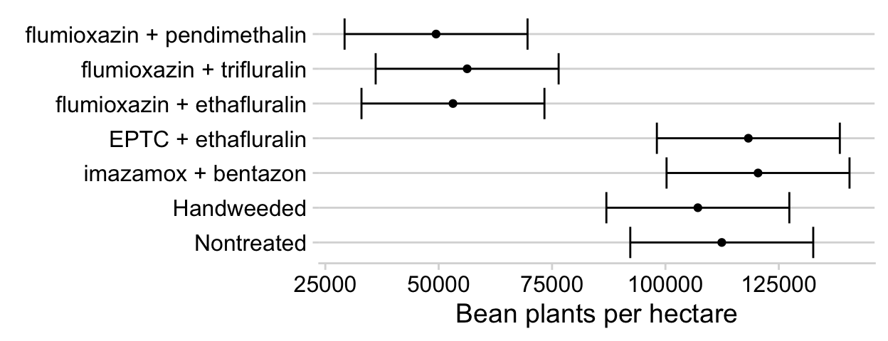

9 Mixed Models - ANOVA
There are many examples in agronomy and weed science where mixed effects models are appropriate. In basic ANOVA, all variation not attributable to the treatment(s) is considered random variation. This includes soil variability, experimental locations, benches in the greenhouse, weather patterns between years; many things can affect experimental results that simply cannot be controlled for as part of the study. In many cases, we can try to account for these sources of variation by blocking. We can consider the selection of the blocks to take place at random in the sense that we usually cannot tell in advance whether or not the next block will exhibit a low, high, or more moderate response level - but we can at least assume that differences between the blocks are likely. In this context, we can describe random effects as effects that cannot be controlled and therefore cannot be explained by the treatment structure of the experiment. In many designed experiments, we are not inherently interested in these random effects, but we should acknowledge and account for the variation that they contribute. We can do so using a mixed-effects model that contains both fixed and random effects.
To illustrate mixed effects ANOVA, we will use the same dry bean herbicide data set that was used in the ANOVA section to allow for comparison; please read the ANOVA section for details on the study. We will also need to load several add-on packages for this analysis; most importantly the lme4 and emmeans packages.
Packages used in this chapter:1
flum.dat <- read.csv("http://rstats4ag.org/data/FlumiBeans.csv") %>%
mutate(plants.Ha = round(population.4wk*2.47, -2),
treatment = factor(treatment,
levels = c("Nontreated",
"Handweeded", "imazamox + bentazon",
"EPTC + ethafluralin",
"flumioxazin + ethafluralin",
"flumioxazin + trifluralin",
"flumioxazin + pendimethalin")))9.1 Mixed Effects Model using the lme4 Package
In the ANOVA section, we considered year, block, and treatment all as fixed effects. However, because the number of replicates was different by year, analyzing the combined data from all three years is problematic. The effect of year is unbalanced; we have more observations for 2010 and 2011 than for 2009. We can better deal with the unbalanced nature of the data by using the lmer() function from the lme4 package.
There are other good reasons for analyzing the data as a mixed effect model. The hope is that the results of this experiment can be generalized beyond the three years the study was conducted. The three years in which we conducted the experiment represent 3 possible years out of many when the experiment could have been done, and therefore, we can assume the impact of year to be a random variable. Same goes for the blocking criteria within a year. However, the treatments were selected specifically to determine their impact on the dry bean crop. Therefore, we will consider the treatments as fixed effects, but the year and blocking criteria within a year random effects.
Fixed effects are specified similarly as with the lm() function. Random effects are included in parentheses when specifying the model; we will specify that the block effect is nested within year using year/block as our random term.
## boundary (singular) fit: see ?isSingularNote the message about a singular fit - this typically means at least one of the random effects is estimated to be zero, meaning it does not expain sufficient variance and should probably be removed from the model. To view our random effects, we can look at the varcor part of the model summary:
## Groups Name Std.Dev.
## block:year (Intercept) 1.1156e-03
## year (Intercept) 9.8214e+03
## Residual 2.1420e+04The variance estimate for block:year is very close to zero, and it appears we can safely remove this term from the model. We can then run anova() on the fitted model.
## re-fit without blocks
lmer(plants.Ha ~ treatment + (1 | year),
data = flum.dat) -> flum.lmer
anova(flum.lmer)## Type III Analysis of Variance Table with Satterthwaite's method
## Sum Sq Mean Sq NumDF DenDF F value Pr(>F)
## treatment 7.3046e+10 1.2174e+10 6 68.046 26.534 4.827e-16 ***
## ---
## Signif. codes: 0 '***' 0.001 '**' 0.01 '*' 0.05 '.' 0.1 ' ' 1The herbicide treatment effect produces a very low p-value, indicating a strong effect on dry bean emergence. Therefore, we will want to look at the treatment means to determine which treatments affected dry bean stand. First, though, it is often of interest to look at the random effects.
9.2 Random Effects
The summary() function can be used to print most of the relevant information from the mixed model fit summary(flum.lmer). We can selectively print only the certain parts of the model fit. As shown above, adding $varcor to the summary function of the fit will print out the variance components for the random terms as well as the residual variance.
## Groups Name Std.Dev.
## year (Intercept) 9821.4
## Residual 21420.3The random ‘year’ effect appears to be contributing substantially to the model. When reporting results of a random effects model for publication, it is important that these results be included so that a full accounting of variability is provided. The ranef() function returns estimates for the random effects:
## $year
## (Intercept)
## 2009 3649.736
## 2010 6611.581
## 2011 -10261.317
##
## with conditional variances for "year"On average, bean populations were lower than the overall mean in 2011, and higher in 2009 and 2010. The random effects estimates are roughly the difference between the mean for that year and the grand mean for all years. However, the random effects are ajusted for other terms in the model (including unequal replication), so the exact numbers will be somewhat different.
## [1] 87800## # A tibble: 3 x 2
## year year.mean
## <int> <dbl>
## 1 2009 92600
## 2 2010 95900
## 3 2011 762009.3 Fixed Effects & Mean Separation
In most designed agricultural experiments, the fixed effects (and specifically differences between fixed effects treatments) are of most interest to the researcher. The estimated marginal means (also called ‘least-square means’) can be obtained from the model using the emmeans() function from the emmeans package. We can also use the cld() function from the multcomp package to obtain a compact letter display of treatment groupings.
flum.emm <- emmeans(flum.lmer, ~ treatment, data=flum.dat)
flum.cld <- multcomp::cld(flum.emm, Letters = LETTERS)
flum.cld## treatment emmean SE df lower.CL upper.CL .group
## flumioxazin + pendimethalin 49423 8602 7.3 29250 69596 A
## flumioxazin + ethafluralin 53150 8602 7.3 32977 73323 A
## flumioxazin + trifluralin 56277 8602 7.3 36104 76450 A
## Handweeded 107150 8602 7.3 86977 127323 B
## Nontreated 112423 8602 7.3 92250 132596 B
## EPTC + ethafluralin 118286 8602 7.3 98113 138459 B
## imazamox + bentazon 120423 8602 7.3 100250 140596 B
##
## Degrees-of-freedom method: kenward-roger
## Confidence level used: 0.95
## P value adjustment: tukey method for comparing a family of 7 estimates
## significance level used: alpha = 0.05There are legitimate concerns about the use of compact letter displays when conducting post-hoc mean separation. From the emmeans documentation (?cld.emmGrid):
We warn that such displays encourage a poor practice in interpreting significance tests. CLDs are misleading because they visually group means with comparisons P > alpha as though they are equal, when in fact we have only failed to prove that they differ.
We can also obtain all pairwise comparisons using the pairs function:
By default, the emmeans() function provides confidence limits for the model estimates; we can use those subsequent plotting:
ggplot(flum.cld, aes(x = emmean, y = treatment,
xmin = lower.CL, xmax = upper.CL)) +
geom_point() +
geom_errorbarh() +
theme_minimal_hgrid() +
labs(x = "Bean plants per hectare",
y = element_blank()) *****
tidyverseto modify and summarize data;lmerTestincludes thelme4package, which is used to fit mixed-effects models and thelmerTestpackage provides complete ANOVA table;emmeansprovides the ability to estimate marginal means (called least-square means in SAS) from the fitted mixed-effects model;multcompto get a compact letter display for post-hoc mean separation;cowplotincludes themes for use withggplotthat improve the default figures for visualizing differences↩